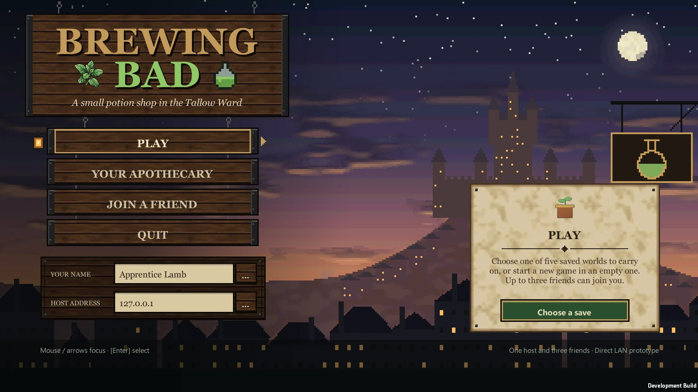
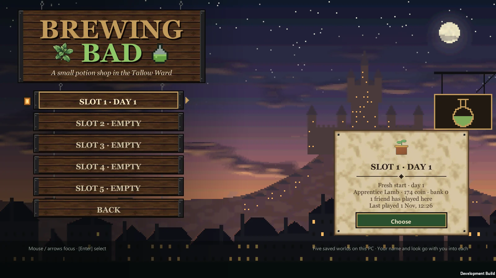

01 / ARRIVE BY FERRY
A letter. A little coin.
We step off at Tallow pier with a letter from Tamsin. No shop, no roof. First stop: Morra in the square.

YOU’RE INVITED · FRIENDS PLAYTEST
Come help me run
a potion shop.
Arrive with a little coin. Build a corner to brew in.
Let’s earn our way through the city gate.
Windows PC · friends playtest · Build to be confirmed

Actual game models · posed in Blender
OUR FIRST DAY IN TALLOW
A family-friendly, hands-on alchemy game with a PSX-style low-poly look. Here’s where we begin.
01 / ARRIVE BY FERRY
We step off at Tallow pier with a letter from Tamsin. No shop, no roof. First stop: Morra in the square.

02 / FIND A CORNER
Morra rents us the byre for 40 coin and sells second-hand gear. A water barrel, one bunk for everyone, and shelves we place ourselves.
See Morra’s second-hand stall ↗See Morra’s second-hand stall ↗
03 / BREW AND EARN
Unload ferry crates for the quay store, visit Pip’s pawn shop, and brew plain tonics for Sister Rook at the Relief Hall. Mind the watch on Gate Street: they don’t care for unsealed bottles.

04 / OUR FIRST BIG GOAL
The group needs rank and coin for gate papers. Through the Lower City Gate is the Lower Market: the bank, Hazel, the runners and better stations.


Real development-build captures · November 2026. HUD hidden except in menu shots. Filming setup described below.
THE CRAFT
Grow and harvest. Grind and cut. Load and stir the pot. Pour to the mark, then cork. We work the tools ourselves.
Silent gameplay loops · captured 31 October 2026 · staged equipment and stock
Actual gameplay · silent loop
Water your herbs, then harvest them part by part.

ONE HOST + UP TO THREE FRIENDS
We share the rank, bank and workshop. Your purse is your own: leave coin and items on a shelf to pass them to a friend.
Everyone needs the exact same build. The townsfolk walk the same routes on every screen.
Days are about 20 minutes. At 4 AM the clock waits until everyone sleeps. Group XP is tallied overnight; morning starts at 7.
No rent, wages or upkeep. Money only goes into growing.
LET’S GET YOU INTO TALLOW
The build link isn’t ready here yet. Ask me for the current build before we play.
Build link not readyUnderseal.exe. The build isn’t signed, so Windows may show “Windows protected your PC”: choose More info → Run anyway for the build I sent you.192.168.x.x. Over the internet, the host forwards TCP port 27931, or everyone joins the same Tailscale or ZeroTier network and uses that address.

TELL ME HOW IT WENT
In game, Esc → Send feedback (or F8) saves a screenshot, the world state and the log. Pick Bug / Confusing / Idea / Felt good.
Zip the Feedback folder and send it to me where we’re chatting:
%USERPROFILE%\AppData\LocalLow\Underseal Prototype\Underseal\FeedbackA small note about what you expected is useful, too.
KNOWN ROUGH EDGES
BEFORE WE PLAY
No. This friends playtest is free. You’ll need a Windows PC and the build I’m using.
Yes. Choose Play, pick a save slot and start a new game, or carry on an old one. You can host without anyone joining.
Yes, the exact same build. Use the same download before we play; the host refuses a different build and tells you why.
In %USERPROFILE%\AppData\LocalLow\Underseal Prototype\Underseal. The host keeps the world. Use the five-slot menu on the title to start or continue. Back up the folder before switching test builds.
Yes. These are real game captures with the HUD hidden except for the title and save menu. Starter gear, stock and gate access were staged in isolated developer saves for filming. The craft loops were captured on 31 October 2026. Morra and Hazel are the actual game models posed in Blender. Visuals and features are in development.